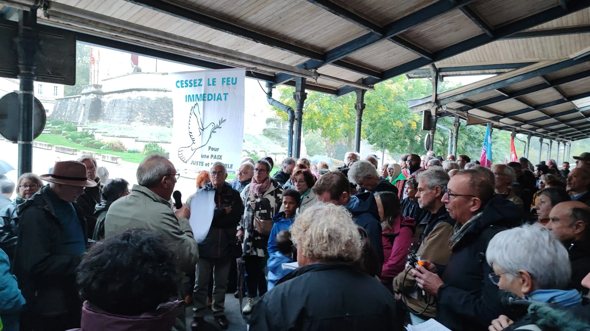
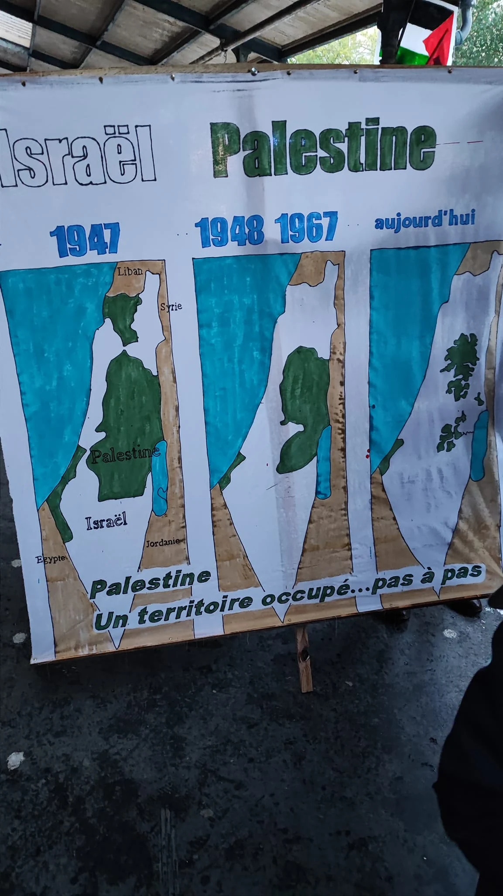
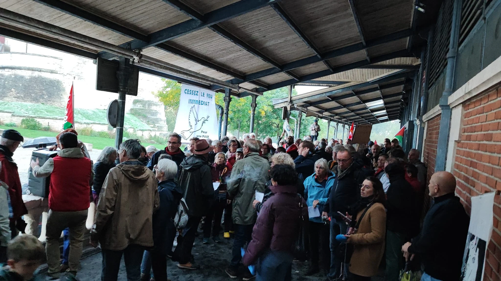
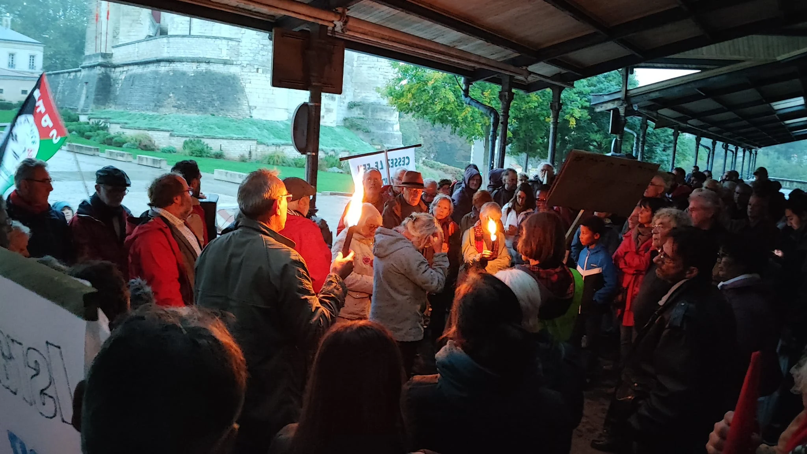

Compte rendu fédéral
À Niort, nous avons demandé un cessez-le-feu le 25 octobre
Date indiquée par Facebook · 25 octobre 2023
Repères éditoriaux
Nous avons demandé un cessez-le-feu immédiat et une paix juste et durable au Proche-Orient lors du rassemblement du 25 octobre. Les photos et la vidéo en gardent la trace.
Texte conservé avec la publication
Rassemblement ce soir à Niort pour un cessez le feu immédiat et pour une paix juste et durable au Proche Orient.
Nous condamnons fermement les crimes de guerre commis par des commandos du Hamas contre des civils israéliens. Ce ne sont pas des actes de résistance mais des actes barbares. Le droit de résister reconnu à tout peuple opprimé ne peut les justifier.
Ces crimes ne peuvent en aucun cas justifier qu’Israël commette d’autres crimes de guerre avec l’aval et le soutien de ses alliés. Chaque victime civile israélienne comme palestinienne est à déplorer. Chaque vie compte autant qu’une autre à nos yeux.
Nous appelons :
À un cessez-le-feu immédiat, avec la fin des bombardements et du déplacement forcé de la population palestinienne à Gaza.
À la protection de toutes les personnes civiles quelle que soit leur nationalité.
À la levée complète du blocus imposé à Gaza.
À la libération immédiate et sans condition, de tous les otages et de tous les prisonniers politiques.
La France à cesser son soutien inconditionnel à la politique israélienne et à mener une action résolue dans le cadre de l’Europe et en tant que membre permanent du Conseil de sécurité de l’ONU pour tout mettre en œuvre afin de faire cesser ces massacres et voir appliquer le droit humanitaire,
La France à user de sa position diplomatique et à œuvrer au respect des résolutions de l’ONU et du Droit International , à commencer par la résolution n° 242 du Conseil de Sécurité des Nations unies en date du 22 novembre 1967 sur l’instauration d’une paix juste et durable au Proche Orient exigeant le retrait des forces armées israéliennes des territoires occupés, et la fin de tout acte de belligérance avec droit pour chaque Etat de la région de vivre en paix à l’intérieur de frontières sûres et reconnues.
#Israel #Palestine #paix #justice




Sources
Archive rouge · export Facebook · AR-0002-FB-01554
À lire aussi · À Niort, le rassemblement du 25 octobre pour la paix en vidéo